Todo el proceso de fabricación de acero, de arriba a abajo. Haga clic en cualquier imagen para ver el sensor NSD que le corresponde.
Preparación del coque a partir de carbón mineral para el proceso de reducción del mineral de hierro.
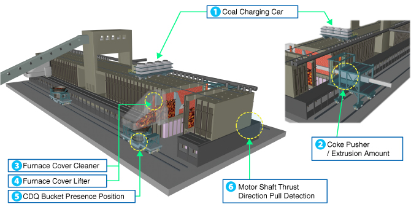
Conversión del arrabio en acero mediante inyección de oxígeno.
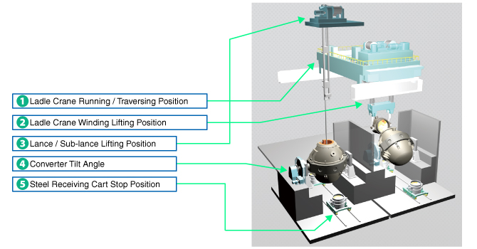
Solidificación continua del acero líquido en planchones o palanquillas.
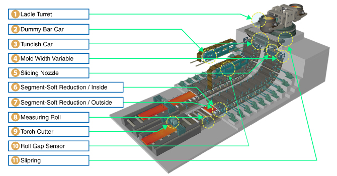
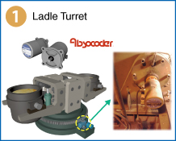
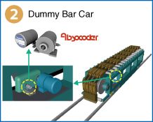
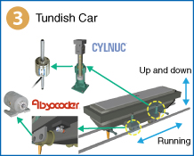
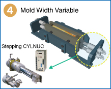
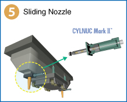
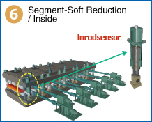
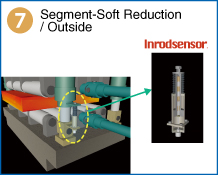
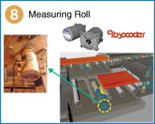
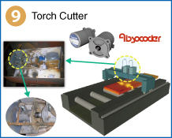
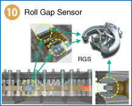
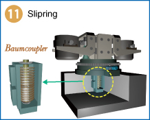
Horno de recalentamiento, prensa de dimensionamiento, molino de laminación y bobinadora.
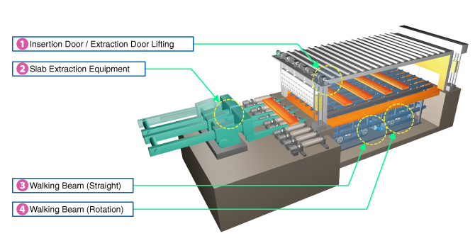
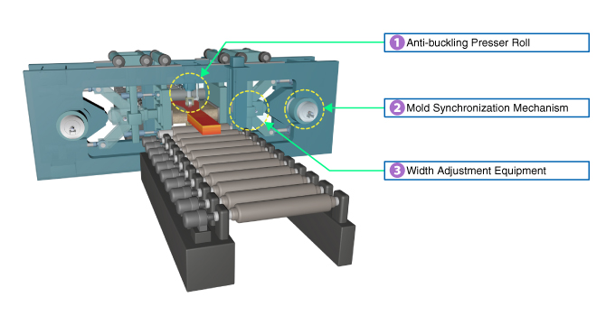
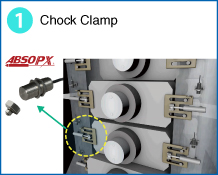
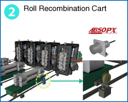
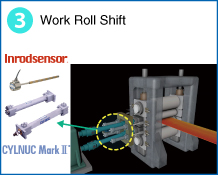
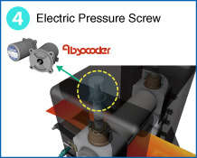
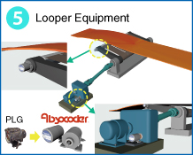
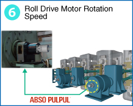
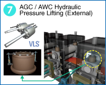
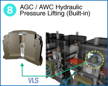
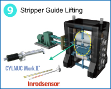
Pendientes de esta sub-etapa: diagrama general, Mandrel Expansion/Contraction, Coil Car Running, y Coil Car Lifting.
Cuéntenos el proceso y le ayudamos a identificar el sensor adecuado.